Establishing Patch as a thought leader
With a Head of Content and in-house climate experts in place, Patch set out to establish itself as a credible voice in the Voluntary Carbon Market (VCM), a space that's confusing and hard to navigate for even seasoned corporate sustainability leaders. The goal was a series of whitepapers, reports, and guides to help them make sense of it. On the design side, I set out to create a collateral system to bring them to life with the right brand tone: sophisticated, motivational, accessible, and conscious.
Credits
Content: Matt Klassen
Brand design: Elena Gil-Chang
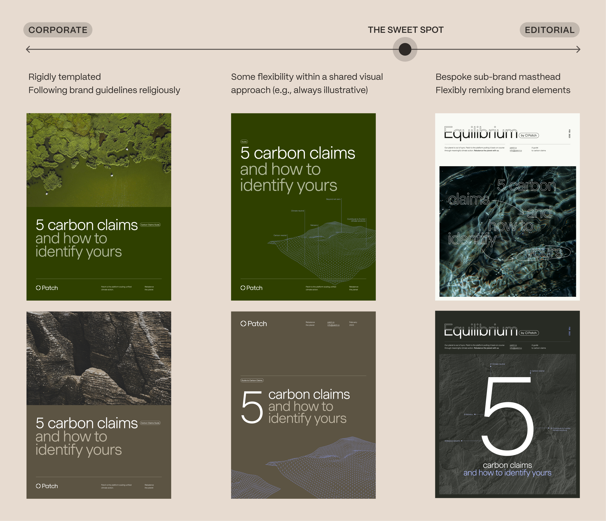
Finding the right register
I organized my exploration along a spectrum: corporate on one end (more templated, more restrained) and editorial on the other (more expressive, more of a point of view). We landed decisively on the editorial side, but not so far that the reports would need their own sub-brand. They needed to feel like Patch, just with more intention.
One of the more deliberate calls I made was to use portrait-format pages rather than landscape, even though these were digital-first documents. Portrait tied the work more closely to the world of academia than to marketing. I stopped short of designing two-page spreads—as appealing as that would have been—because single pages are simply easier to read on a screen.
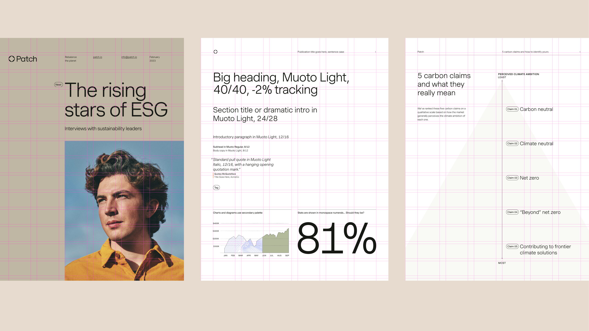
Building a system
With a direction established, I developed a set of InDesign templates with a defined type hierarchy and a flexible masthead system for the covers. The result was a family of documents that could look distinct from one another without ever feeling like they came from different brands.
In production
The guides function as full campaigns: published content drives traffic to Patch's social channels and site, with reports gated to collect leads. What follows is a selection of my favorites.
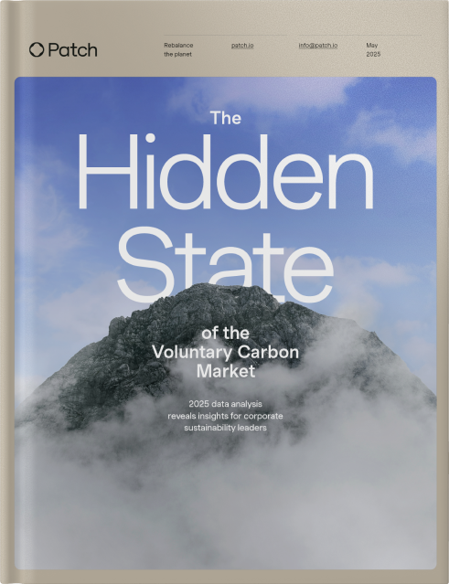
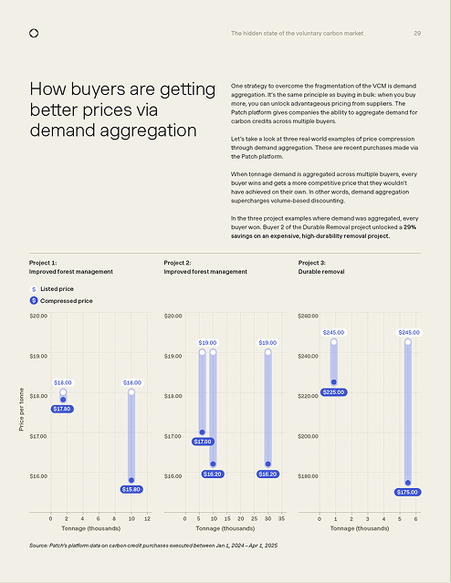
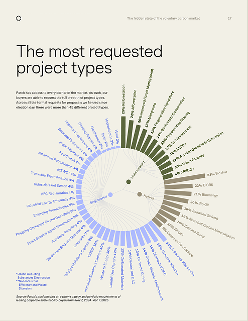
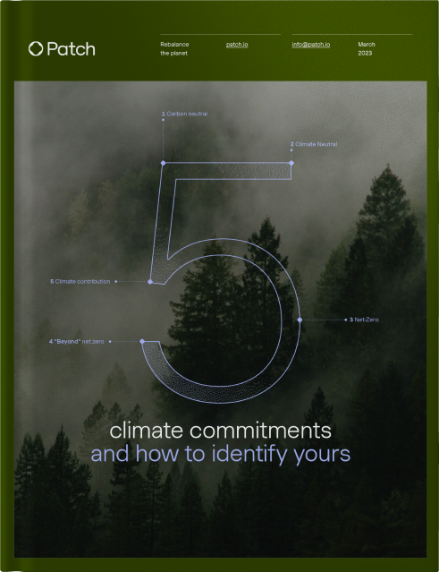
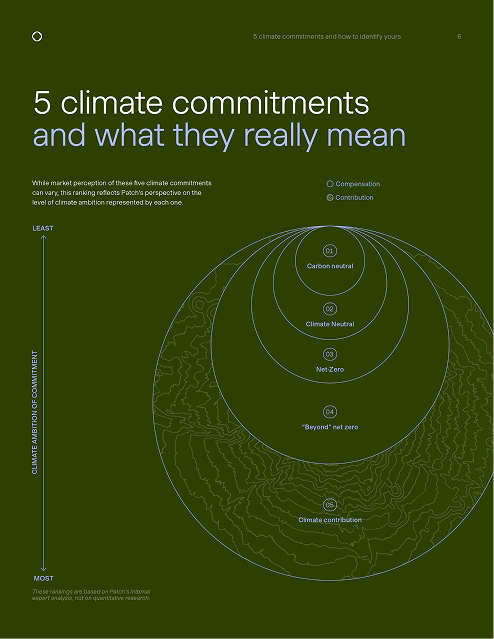
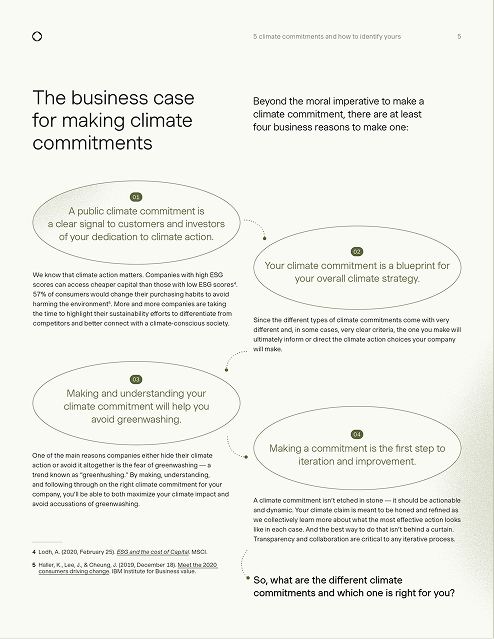
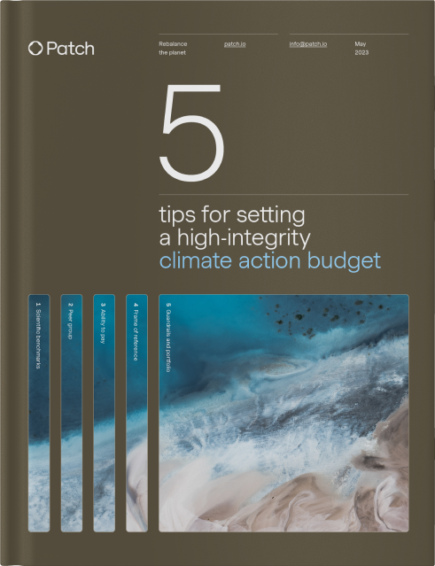
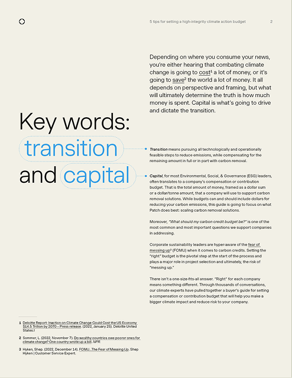
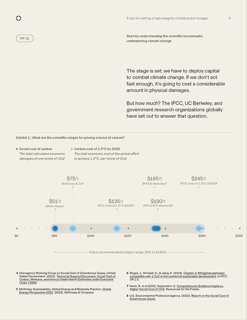
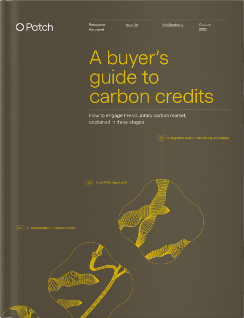
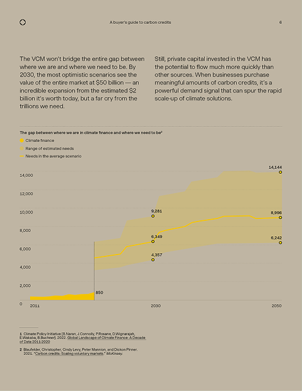
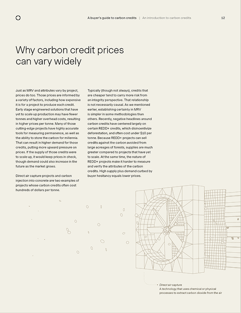
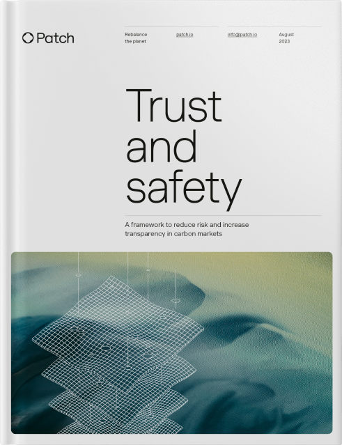
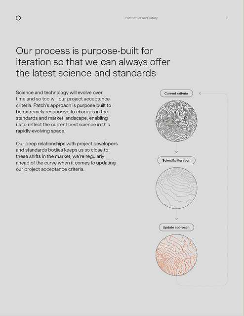
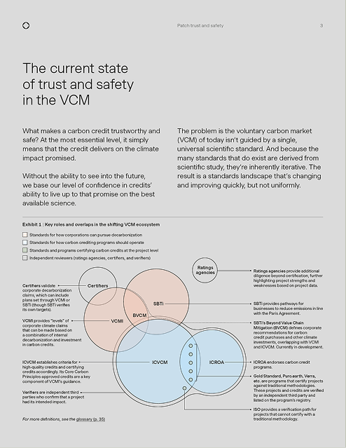
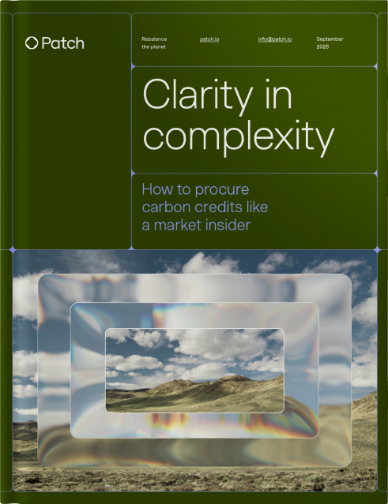
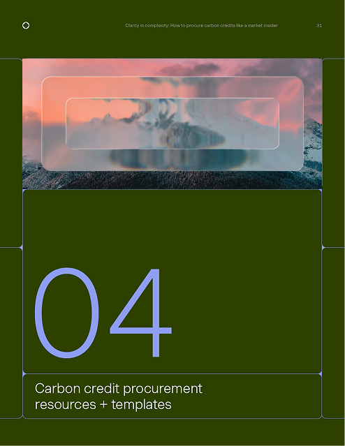
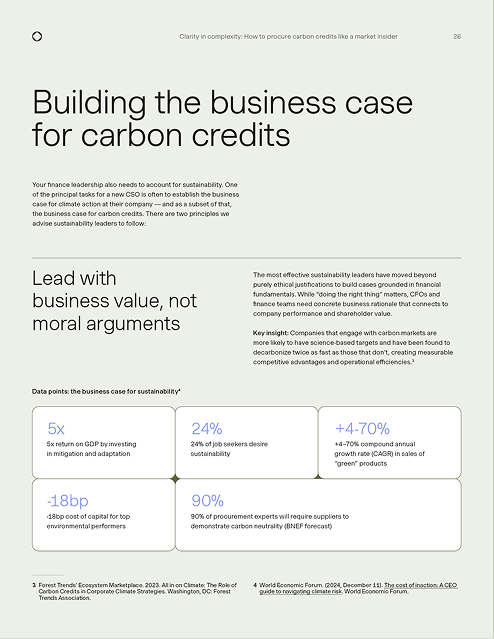